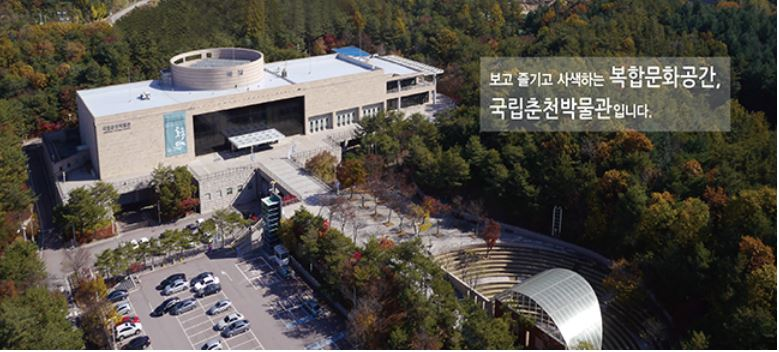

- 이용마당 |
- 전시마당 |
- 교육/문화행사마당 |
- 정보마당 |
- 박물관소개 |
- 시설마당 |

+ 관람안내
1. 관람요금
- 무료 : 사설 전시관, 어린이 문화 사랑방, 무료 기획특별 전시
(단, 유료 기획특별전시 제외)
2. 관람시간
- 평일 : 10:00 ~ 18:00
- 토, 일요일 및 공휴일 : 10:00 ~ 19:00
※야간 연장 개관 : 4월~10월 중 매주 토요일은 오후 9시까지 개관합니다.
- 문화가 있는 날 : 10:00 ~ 21:00(매월 마지막 주 수요일)
3. 관람 유의사항
우리의 귀중한 문화유산을 보호하고 관람질서를 유지하기 위해 다음사항을 준수하여 주시기 바랍니다.
- 박물관의 모든 공간은 금연구역 입니다.
- 음식물 반입과 안내견 이외의 애완동물의 출입은 금지되어 있습니다.
- 전시실 입장전에, 휴대전화는 전원을 꺼주시거나 진동으로 전환하여 주십시오.
- 전시품에 손을 대거나 손상을 입힐수 있는 행위는 절대 삼가 주십시오.
- 플래시/삼각대 등을 이용한 촬영과 상업적 용도를 위한 촬영은 금지되어 있습니다.
홈페이지 이동